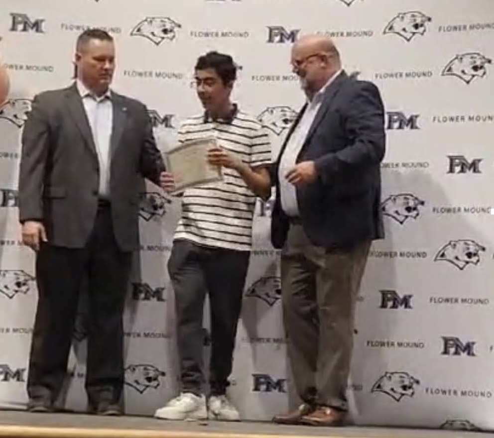

My Competitions
- CyberPatriot's National Youth Cyber Defense Competition
- The StellarXplorers National Space Design Competition
My Awards
WRIGHT BROTHERS AWARD
The Wright Brothers Award in the CAP Cadet Program launched in 2003, during the centennial of Orville and Wilbur Wright’s historic first flight. Cadets earn the award upon completing Phase I, “The Learning Phase,” consisting of the Cadet Program’s first three achievements. As such, the award recognizes excellence in all four areas of cadet life: leadership, aerospace, fitness, and character. In addition, Wright Brothers Award recipients have passed a challenging, closed-book examination testing leadership knowledge and proficiency in drill and ceremonies.

High School Jammin’ Jags Award
These are special awards where each student is specifically nominated by teachers who have seen many
outstanding traits in your child while working with them at Flower Mound High School and FM9. Some
areas teachers look for when nominating Jammin’ Jags include, but are not limited to:
- Displays good effort
- Helpful to peers and staff
- Always prepared and attentive
- Displays school spirit
- Displays exemplary citizenship
- Involved in school related activities